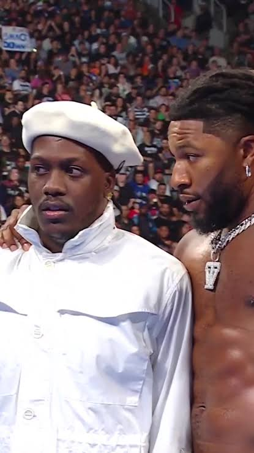
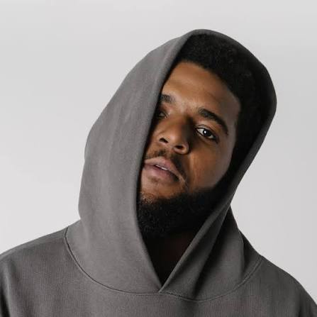
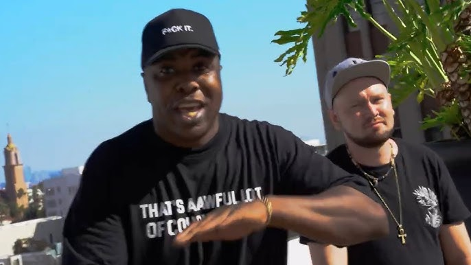
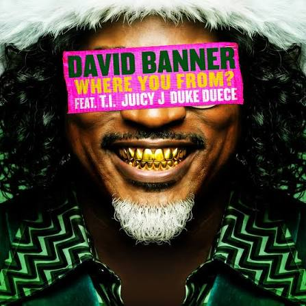
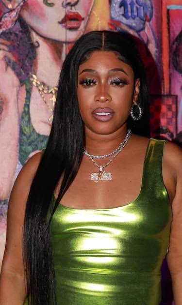
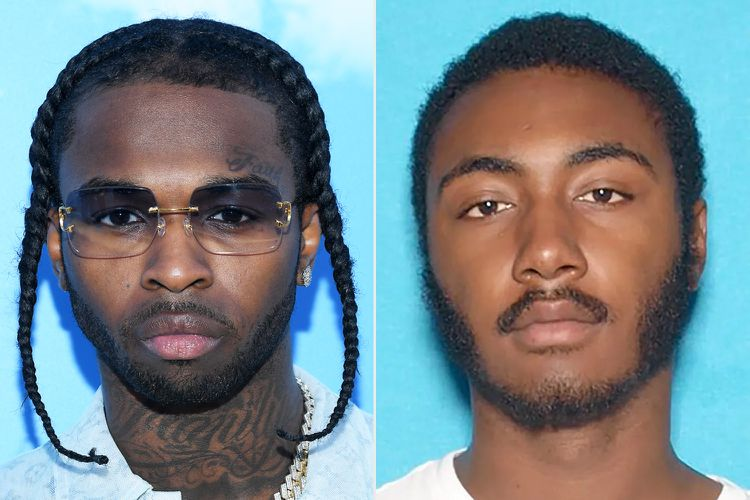
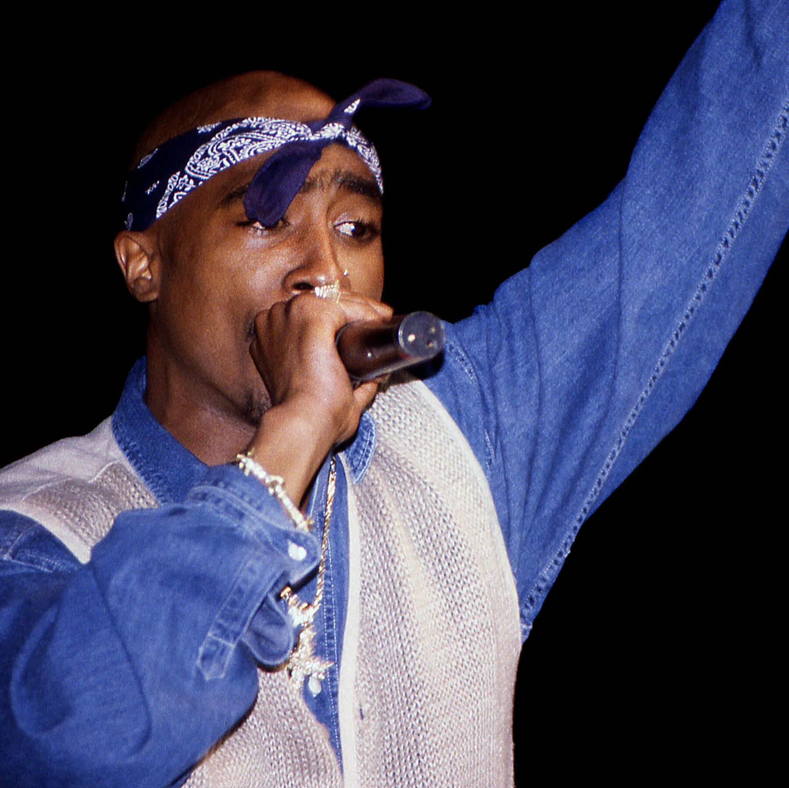
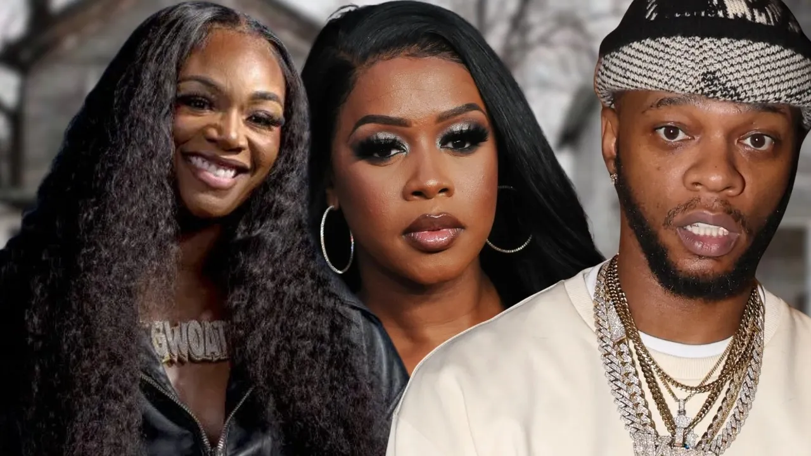
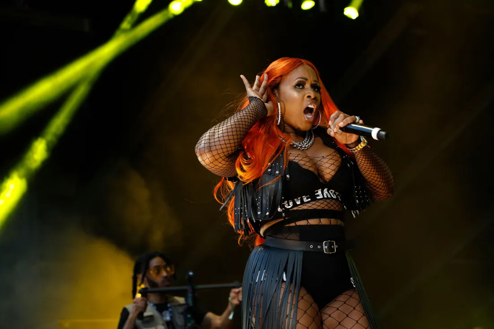
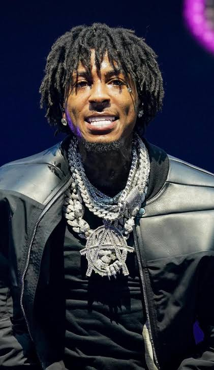

Lil Yachty’s WWE Debut Draws Fan Backlash as Rapper Prepares for Five-Minute Match With Baron Corbin
Published: Sunday, August 23, 2026
Lil Yachty is preparing to make his WWE in-ring debut against Baron Corbin at Sunday Night’s Main Event on Sept. 6 in Atlanta.
Read more
Quality Control Co-Founder Pierre “P” Thomas Hospitalized After Reported Heart Attack
Published: Friday, August 21, 2026
Pierre “P” Thomas, co-founder of Quality Control Music, is hospitalized in Las Vegas after reportedly suffering a heart attack.
Read more
Chris Brown Faces $13.8M Judgment Fight as Former Housekeeper Targets Tour Income
Published: Friday, August 21, 2026
Chris Brown is fighting efforts by former housekeeper Maria Avila to collect a nearly $13.8 million judgment from his entertainment income as he seeks a new trial.
Read more

CJ Wallace Takes Legal Action Over Changes to Voletta Wallace’s Estate
Published: Friday, August 21, 2026
Christopher “CJ” Wallace Jr., Biggie’s son, has gone to court over changes made to his grandmother’s estate plan shortly before her death in February 2025.
Read more

Frawst Celebrates 1 Million Spotify Streams With “Broken”
Published: Tuesday, August 18, 2026
The New York independent artist passes the million-stream mark with “Broken” while also building momentum on YouTube.
Read more

David Banner Connects Southern Rap Generations on “WHERE YOU FROM?”
Published: Tuesday, August 18, 2026
David Banner's new single features T.I., Juicy J and Duke Deuce, connecting Atlanta, Memphis and Mississippi across Southern hip-hop generations.
Read more

Trina Teases Seventh Album as Potential Final Chapter of Her Rap Career
Published: Tuesday, August 18, 2026
After nearly three decades of breaking barriers in hip-hop, Trina may be preparing to close the book on her recording career, teasing her upcoming seventh studio album as a possible final release.
Read more

Pop Smoke Murder Convict Gets 4 More Years in Fentanyl Case
Published: Monday, August 17, 2026
A man convicted in the 2020 killing of rapper Pop Smoke has been handed another prison sentence after prosecutors accused him of possessing fentanyl-laced pills while being held at a Los Angeles County juvenile facility.
Read more

Tupac Shakur Murder Trial Begins: Keefe D Case Brings Nearly 30 Years of Questions Back to Court
Published: Monday, August 17, 2026
Nearly three decades after Tupac Shakur was killed in Las Vegas, the rapper’s death is once again at the center of a courtroom battle.
Read more

Remy Ma Fires Back at Claressa Shields With Savage “Clearance Rack” Diss on “Wanna Go”
Published: Friday, August 14, 2026
Remy Ma appears to be answering Claressa Shields with a new diss track, and she isn’t exactly being subtle.
Read more
Lil Durk’s “Pissed Me Off” Music Video Allowed as Evidence in Federal Trial
Published: Friday, August 14, 2026
A federal judge has ruled that prosecutors will be allowed to present Lil Durk’s 2021 song “Pissed Me Off” and its accompanying music video to jurors when the rapper goes to trial on federal murder-for-hire charges.
Read more

Remy Ma Defies Papoose’s Legal Warning — Performs Controversial Diss Track Anyway
Published: Wednesday, August 13, 2026
The ongoing fallout between Remy Ma and Papoose has taken another turn after Remy performed one of her most talked-about songs months after Papoose’s legal team reportedly demanded that she stop distributing it.
Read more

NBA YoungBoy Says He May Never Return to America After South Korea Trip
Published: Wednesday, August 12, 2026
NBA YoungBoy told Funny Marco he does not see himself returning to the United States after experiencing life in South Korea, citing the country's atmosphere, cleanliness and sense of safety...
Read more

Ne-Yo Hit With Lawsuit Over Alleged Dog Attack at Georgia Property
Published: Tuesday, August 11, 2026
Grammy-winning singer Ne-Yo is being sued by a woman who says she was injured after one of the entertainer’s dogs allegedly attacked her while she was making a delivery...
Read more

Tupac Shakur Murder Trial Begins Nearly 30 Years After Rapper's Death
Published: Monday, August 10, 2026
Nearly 30 years after Tupac Shakur was killed in Las Vegas, the case surrounding the legendary rapper's death is finally going before a jury...
Read more

Usher Laughs Off Viral Clone Rumors Following New Jersey Concert With Chris Brown
Published: Monday, August 10, 2026
Usher found himself at the center of an internet conspiracy after his performance with Chris Brown at MetLife Stadium, with some claiming he was replaced by a clone...
Read more